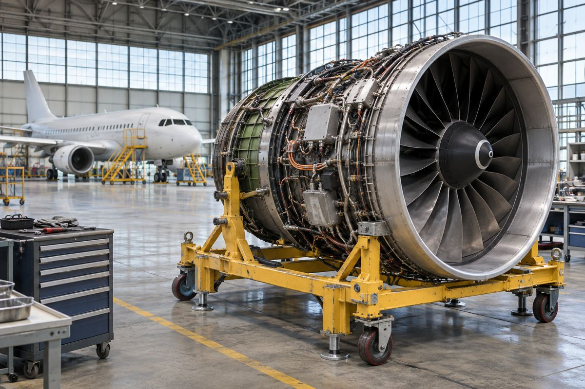

항공 / EXPLAINED
버진 오스트레일리아, 737 부품 지원에 델타 테크옵스 선정
5년 계약은 737NG·MAX 100대 이상에 적용된다. 작업은 미국, 물류는 아시아·호주 거점을 잇는다.

델타항공은 11월 11일 버진 오스트레일리아가 보잉 737NG와 737 MAX의 부품 지원을 델타 테크옵스에 맡긴다고 밝혔다. 계약 기간은 5년이고 대상은 두 계열 합계 100대 이상이다. 기체 구성품과 CFM56-7B, LEAP-1B 엔진의 구성품이 범위에 들어간다. 발표에는 선정 결과와 계약 범위가 나와 있으며 첫 부품을 접수하는 날짜나 계약의 정확한 기산일은 명시되지 않았다.
버진 오스트레일리아는 호주의 여객 항공사이고, 델타 테크옵스는 여객기를 운영하는 델타항공의 정비 사업이다. 항공기 정비 분야에서 MRO는 유지보수·수리·분해정비를 뜻한다. 이 계약의 공개된 범위는 부품 지원이다. 델타가 버진 오스트레일리아 항공편을 운항하거나 모든 기체 정비를 넘겨받는 내용으로 확대해 읽을 수 없다. 델타는 이전에도 이 회사의 CFM56-7B 엔진을 지원하고 부품을 수리했다고 설명한다.
737NG와 737 MAX는 보잉의 단일 통로 여객기 계열이지만 다른 시기에 설계됐다. NG의 CFM56-7B와 MAX의 LEAP-1B는 같은 CFM 계열 제조사가 공급하는 별도 엔진이다. 정비 절차와 호환 부품은 각 엔진의 문서를 기준으로 관리된다. 여객기는 비행을 계속하더라도 떼어 낸 부품은 각자 다른 시간표에 따라 점검하고 수리할 수 있다. 두 엔진의 부품이 하나의 계약에 들어갔다는 사실과 같은 부품으로 서로 교체할 수 있다는 주장은 구분해야 한다.
공개 계획상 작업은 주로 애틀랜타와 미니애폴리스에서 이뤄지고, 싱가포르·브리즈번·멜버른·시드니의 버진 오스트레일리아 물류가 이를 지원한다. 부품이 고장 나면 떼어 검사하고 가용 부품을 교체한 뒤 수리품을 재고에 돌리는 흐름이 생길 수 있다. 항공사가 보유한 교체품의 수량, 정비소의 처리 시간, 항공 운송 시간은 각각 필요한 계산이다. 이 발표에는 보관 위치별 재고나 실제 수리 소요 시간은 제시되지 않았다.
델타 테크옵스는 회사 전체로 연간 부품 10만 개 이상을 다룬다고 소개했다. 이는 버진 오스트레일리아가 보내는 부품 수가 아니며, 다섯 해 동안 이 계약에 배정된 물량도 아니다. 편집부는 기단이 두 세대의 엔진을 함께 쓰는 동안 정비 지원을 묶으면 부품 조달과 수리 창구를 계획하기 쉬워질 수 있다고 본다. 다만 처리 기한과 공급 조건을 모르는 상태에서 정시율이나 결항률이 개선된다고 계산할 수는 없다.
부품 지원을 평가할 때는 기체가 멈춘 시간과 부품이 정비소에 머문 시간을 따로 봐야 한다. 충분한 교체품이 있는 항공사는 수리에 시간이 걸려도 비행을 재개할 수 있다. 반대로 드문 부품이라 재고가 없다면 짧은 수리라도 운송과 대기를 합친 시간이 중요해진다. 5년이라는 계약 기간은 양측이 지원 관계를 이어갈 기간이며, 개별 부품이 돌아오는 시간을 설명하지 않는다.
승객이 당장 확인할 변화는 항공편 시간표보다 두 기업 사이의 지원 범위다. 실제 운항에서는 정비 외에도 날씨, 공항 혼잡, 승무원과 기체 배치가 지연에 영향을 준다. 계약의 금액, 가동률 목표와 부품 공급 성과는 이번 발표에 포함되지 않았다. 처음 공개된 범위와 이후 보고되는 이행 실적을 구분하면, 항공편과 직접 연결되는 효과를 판단하기 쉽다.